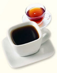

В соответствии с результатами исследования, проведённого в рамках Национального опроса по изучению здоровья и питания, потребление горячих чая и кофе снижает риск обнаружения MRSA в мазках из носоглотки в два раза.
Известно, что чай и кофе обладают антимикробными свойствами. Однако до сих пор остаётся открытым вопрос о характере действия данных напитков. Целью исследования, проведённого группой учёных во главе с Eric M. Matheson, MD (Медицинский Университет Южной Каролины в Чарльстоне, Отделение семейной медицины), было определение, влияет ли употребление чая и кофе на частоту носительства метициллинорезистентных штаммов Staphylococcus aureus (MRSA).
Исследователями анализировались данные 2003-2004 гг., полученные в рамках проведения Национального опроса по изучению здоровья и питания (National Health and Nutrition Examination Survey) с целью исследования связи между потреблением кофе, горячего, холодного чая и безалкогольных напитков и частотой носительства MRSA среди населения США. Статистическая обработка результатов проводилась с помощью логистического регрессионного анализа с учётом возраста, расовой и половой принадлежности, финансового благополучия, общего состояния здоровья, числа госпитализаций за последний год и применения антибиотиков в течение последнего месяца.

Было выявлено 2,5 миллиона носителей MRSA, что составило 1,4% населения. Среди них 88,6 млн. (48,6% населения) употребляли горячий чай за последний месяц, а 110,7 млн. (60,8% населения) — кофе. Участники исследования, указавшие на потребление горячего чая, в два раза реже являлись носителями MRSA в сравнении с лицами, не употреблявшими горячий чай (отношение шансов 0,47; 95% доверительный интервал, 0,31-0,71). Кроме того, двукратное снижение риска носительства MRSA наблюдалось и среди лиц, употреблявших кофе в сравнении с не употреблявшими этот напиток (отношение шансов 0,47; 95% доверительный интервал, 0,24-0,93). Кроме того, сходные данные были получены и при употреблении обоих напитков.
В ходе исследования не было выявлено зависимости между потреблением холодного чая и риском носительства MRSA. По замечанию авторов, объяснением данному факту может служить более низкий уровень полифеноловых соединений на единицу объёма в охлаждённом напитке, поскольку большинство полезных составных компонентов чая обладают большей растворимостью при повышенной температуре.
Кроме того, подобной закономерности не было выявлено и при употреблении газированных напитков, содержащих кофеин, на основании чего было сделано предположение о том, что кофеин не влияет на снижение частоты носительства MRSA.
До сих пор полного понимания механизмов антимикробного действия чая и кофе нет. В кофе содержатся тригонеллин, глиоксал, метилглиоксал, диацетил, в чае — таниновая кислота и катехины. По всей вероятности, данным составным компонентам эти напитки и обязаны своими свойствами. Кроме того, оба напитка снижают всасываемость железа в организме, а поскольку данный элемент является ключевым звеном роста S. aureus, исследователи рассматривают его также как один из механизмов эффективности чая и кофе.
Поскольку носительство MRSA не всегда приводит к развитию системных инфекций, решение о проведении эрадикации необходимо принимать с учётом факторов риска, имеющихся у данного пациента.
Таким образом, потребление горячего чая или кофе связано со снижением частоты носительства MRSA. Полученные в ходе исследования данные позволяют говорить о возможности использования безопасного, недорогого и доступного нового метода, направленного на снижение частоты носительства MRSA.
Ограничением данного исследования был тот факт, что распределение участников исследования на группы проводилось лишь по факту потребления напитка, но не учитывалось его количество. Возможно, к вопросу стратификации риска следовало подойти более тщательно: например, потребление 1 чашки кофе в день не влияет на частоту носительства MRSA, 3 чашки — снижение на 25%, 6 чашек — на 50%, 20 чашек — полная эрадикация МRSA.
Кроме того, в исследовании не были проанализированы другие немаловажные факторы, которые могут повлиять на частоту носительства MRSA. К примеру, можно предположить, что люди, употребляющие кофе, чаще моют руки. Однако, несмотря на наличие достаточного количества спорных моментов, полученная информация весьма интересна и требует проведения дальнейших исследований.
Matheson E.M., Mainous A.G. 3rd, Everett C.J., King D.E.
Tea and coffee consumption and MRSA nasal carriage.
Ann Fam Med. 2011; 9: 299-304.